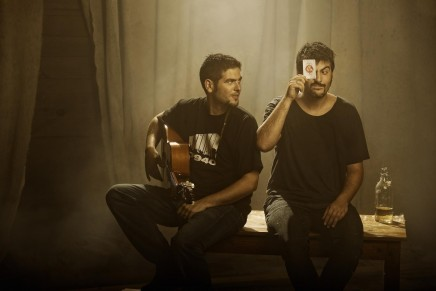
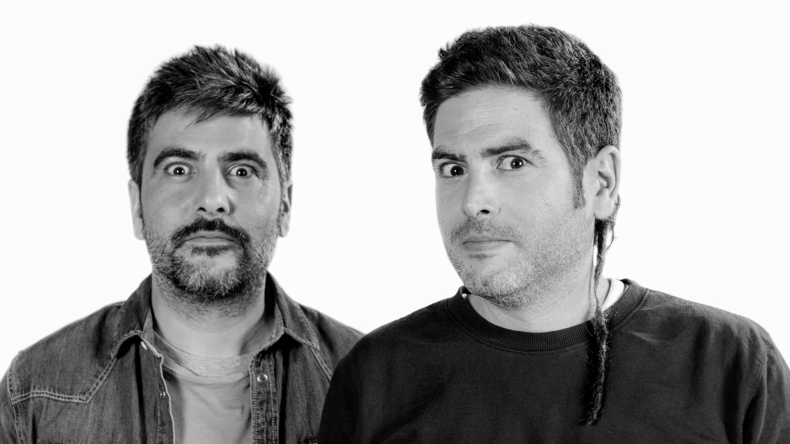
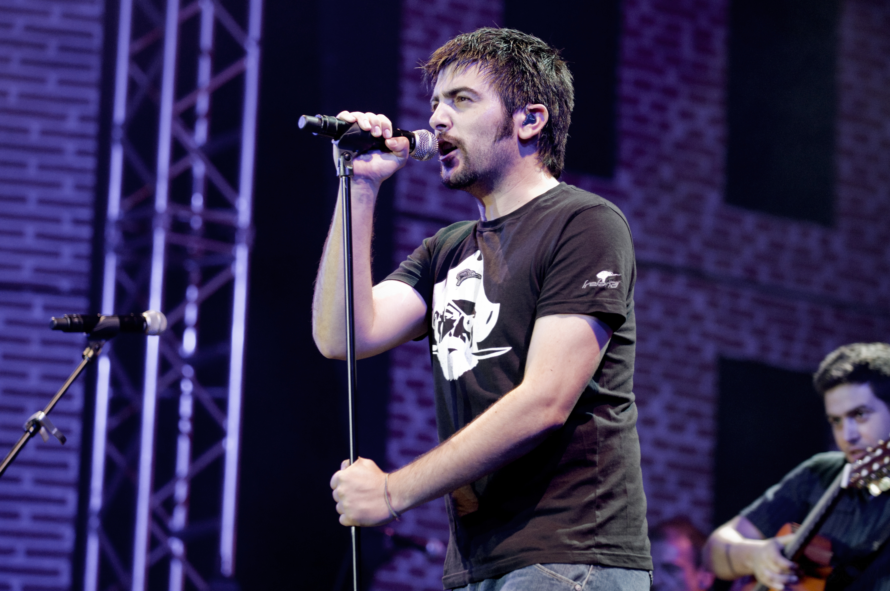
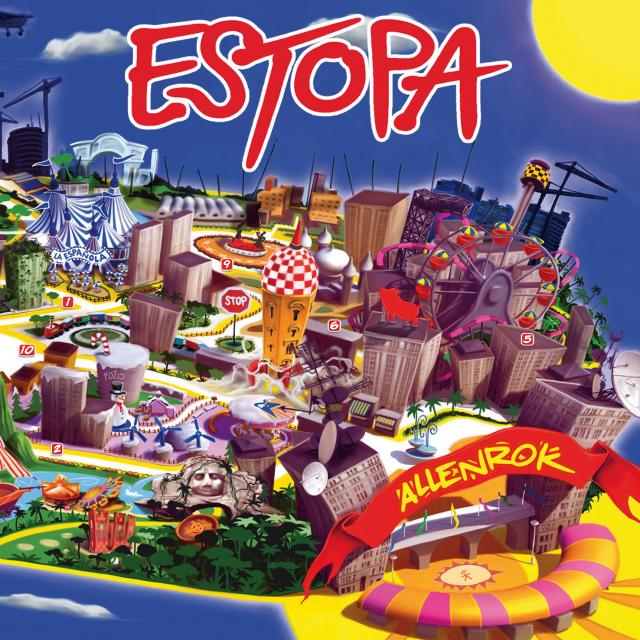
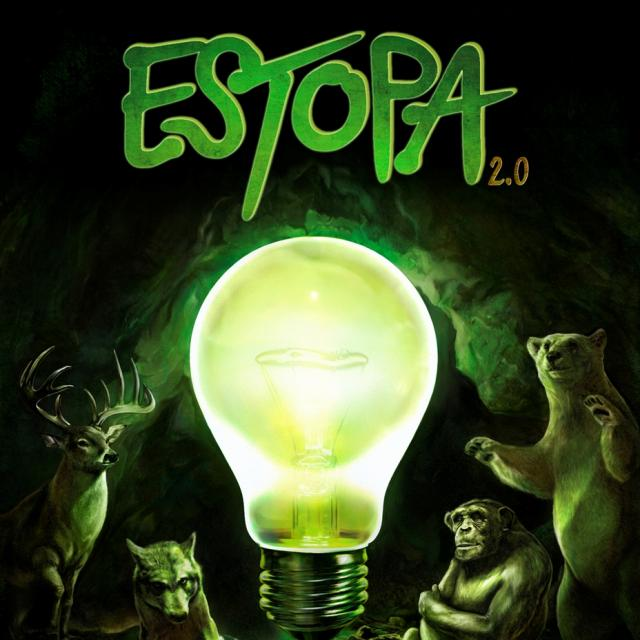

BIOGRAFIA
Estopa es un dúo español de rumba catalana formado por los hermanos David y José Manuel Muñoz. Creado el 18 de octubre de 1999, el grupo es natural de la ciudad de Cornellà de Llobregat, Provincia de Barcelona12
Los padres de los hermanos David y José nacieron en Zarza Capilla (Badajoz), en la comarca de la Serena, y regentaban el bar La Española, enfrente de la comisaría de policía de Cornellá. Los Chichos, Los Chunguitos, Bordón 4 o Los Amaya, entre otros, era la música que escuchaban ya desde la infancia David y José, que pronto comenzaron a aficionarse a la guitarra, antes de abandonar el instituto y empezar a buscarse la vida en varios trabajos, el último en Novel Lahnwerk, una fábrica filial de la SEAT produciendo piezas para coches. La historia dice que del grito "¡Dale estopa!" que utilizaba el encargado de la fábrica para que no cesaran en su trabajo, surgió el nombre de una de las bandas más importantes de la música española de este siglo.4
En aquella fábrica, se comenzó a gestar Estopa, la letra de su primer éxito, "La raja de tu falda", las primeras canciones y las primeras actuaciones en garitos del barrio. En 1998, David y José se presentaron al concurso de cantautores del barrio de Horta-Guinardó. Ganaron el primer premio y algo más de 2500 euros (aunque por aquella época no había euros en España).


INTEGRANTES

JOSE MUÑOZ
Nacido el 13 de Noviembre de 1978, es gutarrista, compositor y cantante del grupo español Estopa.
Con su primer disco consiguieron unas ventas cercanas a 1.100.000 copias, logrando así el reconocimiento en su país natal y después en países tales como México y Chile. Allí se realizó una campaña de prensa por medio de las empresas transnacionales españolas en Latinoamérica. Sus siguientes discos han seguido la fórmula que más los ha caracterizado, desde rumbas canallas y urbanas. A esto hay que añadir que todos sus discos hasta Estopa 2.0 han sido discos de platino.
DISCOGRAFIA
VOCES DE ULTRATUMBA
Con más de 1.000.000 álbumes vendidos y 23 Discos de Platino conseguidos con tres discos y en apenas seis años, en noviembre de 2005 se publicó su cuarto álbum, Voces de ultrarumba, producido por Estopa, Antonio García de Diego, José A. Romero y Pancho Varona. “Ahora no nos va a entrar la presión por cosas absurdas. Nos tiramos un año currando en casa, probando canciones y metiendo guitarras. Hemos buscado la variedad, como siempre. Podíamos hacer 12 rumbas o 12 temas rock, pero vamos componiendo y hacemos la selección como un cuadro, dando color, buscando el equilibrio”, afirmaban David y José. Voces de ultrarumba repitió n.º 1 directo en la lista de ventas con canciones como "Vacaciones", "No quiero verla más", "Lunes" y un abanico largo de estilos: rumba, rap, reggae, rock, bolero o salsa. El resultado: casi 400.000 álbumes vendidos.
Voces de ultrarumba fue el primer disco en España que comenzó su difusión por teléfono móvil,[cita requerida] a través de la descarga directa por sistema bluetooth, y alcanzó el doble Disco de Platino en 24 horas con 160.000 ejemplares vendidos. El álbum se publicó en digipack con un CD y un DVD que añadía seis canciones en acústico y una larga entrevista con Andreu Buenafuente. Voces de ultrarumba fue el disco de las navidades de 2005, permaneciendo cuatro semanas consecutivas en el n.º 1 con tres Discos de Platino y más de 240.000 ejemplares vendidos en un mes.
El 4 de mayo de 2006, Estopa presentaba su gira Ultrarumba de más de 55 conciertos recibiendo 30 Discos de Platino por los más de tres millones de discos vendidos a lo largo de su carrera. “Tenemos la misma ilusión que cuando estábamos a punto de comenzar la primera gira. Estamos por estrenar. Cuando nos bajamos del escenario no tiramos de ningún ranking porque dejaríamos de ser Estopa”, declaraban aquel día David y José Muñoz, que poco después presentaban la canción "Showtime" como canción oficial del Campeonato de Europa de Baloncesto de 2007 que se celebró en España.[cita requerida] La gira finalizó en octubre de 2006 y Estopa se tomó una pausa. “Hemos estado con la familia, en nuestro bar, jugando al basket, pero nos reuníamos todas las tardes para hacer canciones. Compusimos 30 ó 40 en seis meses. Y llegó un momento en el que dijimos: hay que grabar ya”, aclararon entonces los hermanos Muñoz.

ALLENROK
En febrero de 2008 se publicó Allenrok, su quinto álbum de estudio con un título que, según Estopa, “Es un homenaje a nuestra ciudad en el disco más nuestro. Es el primero que producimos, lo hemos hecho todo. Es un paso importante, lo que nos gusta. Y lo que nos gusta viene de Cornellá”. Canciones como "Cuando amanece", "Cuerpo triste", "Hemicraneal" o "Pesadilla" impulsaron al álbum a un nuevo n.º 1 durante cinco semanas consecutivas con más de 140.000 discos vendidos en los primeros siete días. Este disco presenta 12 estados de ánimo; el primer sencillo del disco fue "Cuando amanece", al que siguieron "Cuerpo triste", "Hemicraneal" y "Pesadilla". En "Cuando amanece" y en "El run run" ha colaborado Chonchi Heredia (que también colaboró en "Tu calorro" y en "El del medio de los Chichos"). En el disco colaboran Juan Maya, Angie Bao, José Antonio Romero, Ludovico Vagnone, Luis Dulzaides, Nacho Lesko y Dani Bañon entre otros.
Terminada la gira Allenrok, el 8 de febrero de 2009, David y José Muñoz apadrinaron una plantación popular de un bosque de 10 000 árboles entre Cornellá de Llobregat y El Prat de Llobregat. Tras poner en marcha el ya conocido como “El bosque de Estopa”5 David y José Muñoz comenzaron la preparación de Estopa X Anniversarivm.
ESTOPA X ANNIVERSARIVM
En junio de 2009, durante su visita a Los Ángeles al E3, una feria de videojuegos, anuncian que ese año publicarán un disco con motivo de la celebración de su décimo aniversario, con sus mejores canciones interpretadas a dúo con artistas como El Canto del Loco, Joan Manuel Serrat, Joaquín Sabina, Los Chichos, Albert Pla, Rosendo, Ana Belén, Ojos de Brujo, Rosario, Chambao, Macaco, El Bicho y Muchachito Bombo Infierno.
Publicado el 17 de noviembre de 2009 es la celebración del décimo aniversario del lanzamiento de su primer álbum, allá en 1999. Estopa X Anniversarium es el sexto álbum de Estopa. En el disco se versionan temas de los discos anteriores con la participación de músicos y grupos de distintos estilos, como Rosario Flores, Joaquín Sabina, Muchachito Bombo Infierno, Ana Belén, Macaco, Albert Pla o El Canto del Loco. Este disco se pudo adquirir en dos ediciones: una simple que solo contiene dos CD, uno colaboraciones y otro de nuevas ediciones de sus mayores éxitos o también se pudo adquirir una deluxe en la que aparece los dos CD, dos DVD uno con todos los videoclips y otro con un concierto, la película-documental sobre Estopa "Regreso a la Española", una bandera, un póster y el cómic Ultimate Estopa. En febrero de 2010 se colocó en el 1º puesto de la lista de los más vendidos de España.

ESTOPA 2.0
El 7 de octubre de 2011 se estrenó oficialmente su sencillo llamado "La primavera", pudiéndose escuchar en su nueva web y, a partir del 9 de octubre, en todas las radiofórmulas de España
El álbum se lanzó el 21 de noviembre en formato digital a través de iTunes con la canción "Me quedaré" en acústico como extra, en Spotify con el tema "Vacilón" en acústico, y en una edición especial y limitada a través de su web con la bonus track "Naturaleza"; además incluye la canción "Con la cabeza colgada" de su primera maqueta pero con el nombre "La Locura".10 En su primera semana a la venta consiguió ser el disco número uno en España con más de 40.000 discos vendidos,11 pasados tres meses después el disco se convierte en doble disco de platino con más de 80.000 copias vendidas.
Ya en 2012, el 17 de enero anuncian en su web el nuevo sencillo del disco "Me quedaré" además de las fechas de los conciertos de su gira.13 El 17 de mayo con motivo de la próxima Eurocopa 2012 de fútbol Estopa estrena "Showtime 2.0" canción de apoyo a la Selección Española y que, a posterior, acabarían ganando
Tras un año de exitosa gira por Europa15 y Latinoamérica,16 el 11 de marzo de 2013 dan a conocer que están inmersos en la grabación del tema principal de la Banda Sonora de "Somos Gente Honrada", nueva película del director Alejandro Marzoa, llamado "Gente Honrada".17 Se estrena el 16 de abril pudiendo ser comprado en iTunes y otras plataformas de descarga digital